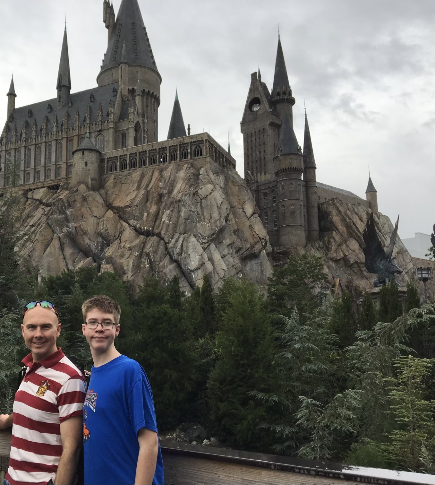
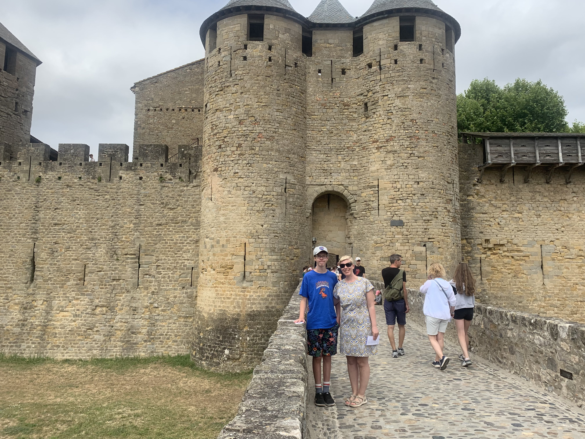
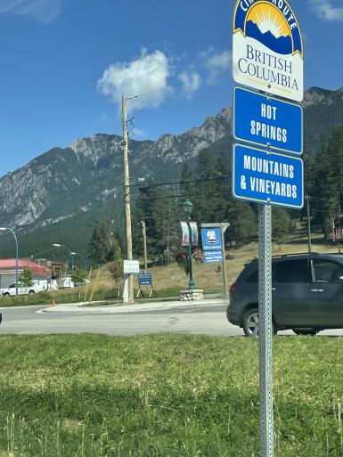

My Journey through Video games
The first time I ever played a video game was in 2009 on the xbox 360. The game was The Beatles Rock Band, and it was a new experience that I loved. The second game I ever played was Mario Kart Wii, and I fell in love immediately. The game was exciting and really fun, it was then that I knew I wanted to have a job in the gaming industry. A little more than a decade passed by and I learned a lot about video games and how to play them. I was nearing highschool and I had no clear thought of what classes I wanted to take. One day in mid january there was a presentation for the grade 8s about a technology school called PTEC or Pembina Trails Early College. It was a school about coding, problem solving and making video games! I was super excited, and when they announced that they were doing a camp to show what the school was like, I signed up as fast as I could. I wanted to have the chance of getting into the school. It was in early April when I found out I got in! I was super excited and was pumped to start learning how to code and make video games because I had wanted to do that since I was little. Last year I learned a lot at PTEC and I learned a lot about C#, Unity, Blender and lots of other stuff. Currently, I am in grade 10 and learning a ton of new concepts, coding practices and problem solving, and I can't wait to keep on learning for the future.
Travelling - Where I have been
I have been to Walt Disney World and Universal Studios, and I have also been to Europe. The places in Europe I have seen are Ireland, England, Scotland, France and Spain. I have also traveled inside of Canada. I have gone to Bitish Columbia a couple of times to go to Radium Hot Springs. I have been to Edmonton and Calgary to visit family, and I have been to Toronto once for a wedding.
 